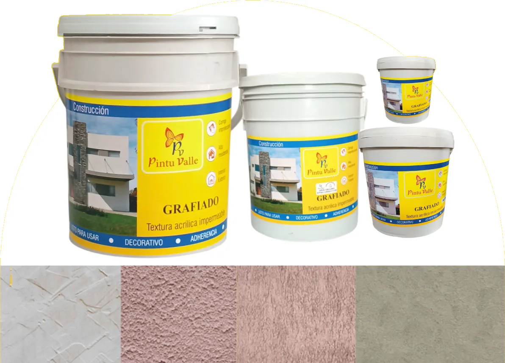
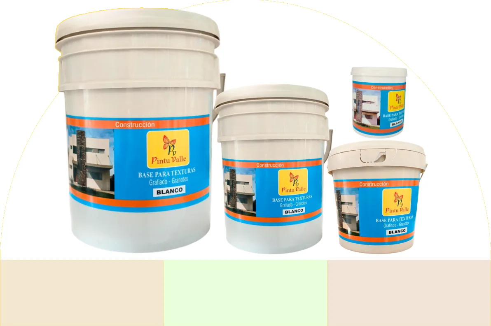

Graniflats y Graniflats

Es un revestimiento texturizado de acabado decorativo, diseñado para proteger y embellecer superficies interiores y exteriores. Su formulación permite crear un efecto granulado uniforme que aporta mayor resistencia y un estilo moderno a los muros.
Es ideal para fachadas y superficies donde se busca un acabado más robusto, decorativo y duradero.
Base de Graniplast

Es un recubrimiento diseñado para acondicionar y uniformar la superficie antes de aplicar el acabado texturizado Graniplast.
Su función principal es sellar, mejorar la adherencia y optimizar el rendimiento del acabado final, garantizando una aplicación más uniforme y duradera.